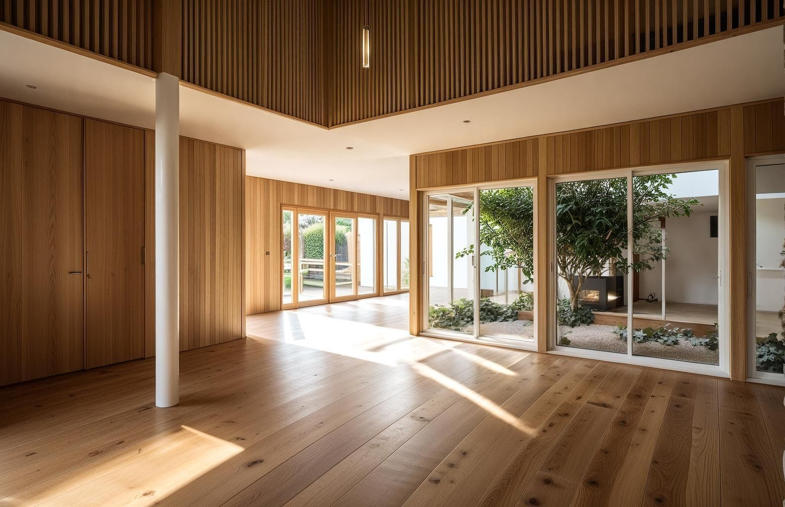
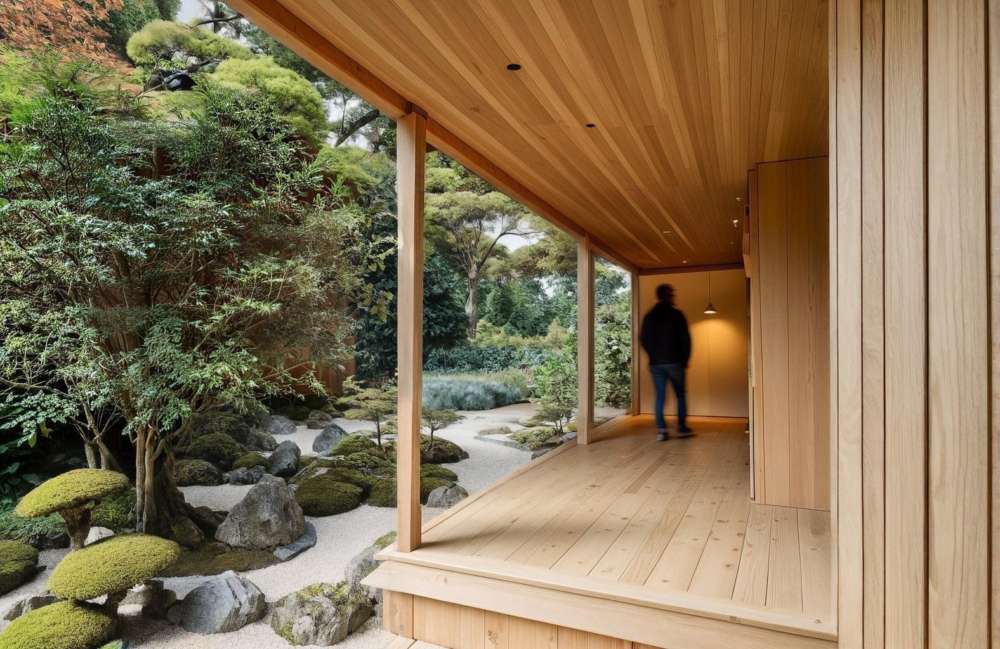

Architecture ・ 計画案
ケンブリッジ大学で「マスター」と呼ばれる学寮長のための建物の計画案です。ふだんはあまり使われないこの空間を、学生が日常的に使える場所とし、学寮長の暮らしと二重らせんのように絡み合うよう計画しました。
中央の庭は、演劇のできる空間です。ケンブリッジの野外の広場では、シェイクスピアの劇が行われています。役職の上下があべこべになる『夏の夜の夢』のように、昼も夜も、学寮長と学生の関係があべこべになる。そんな関係をつくれないかと考えた計画です。
画像は、自作の CG と生成 AI を組み合わせてつくったものです。


